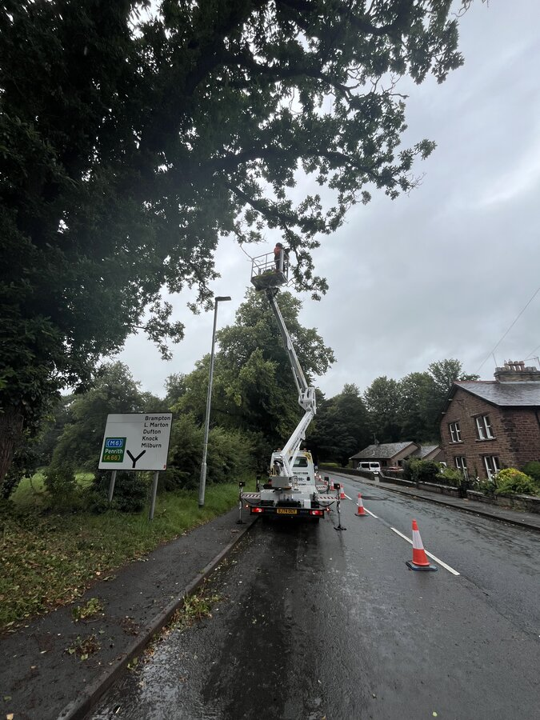
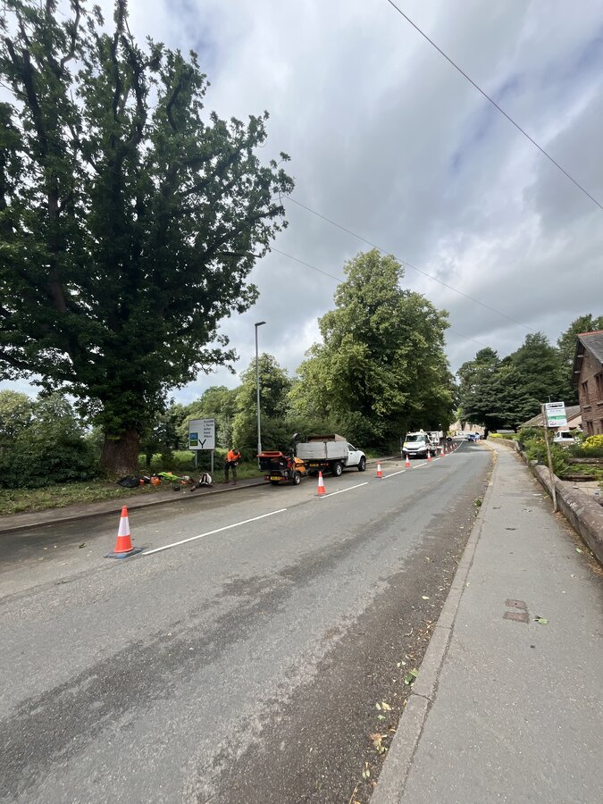
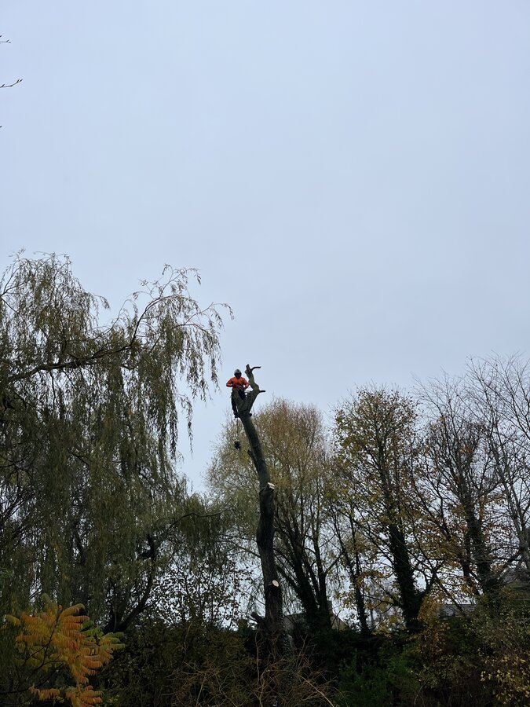
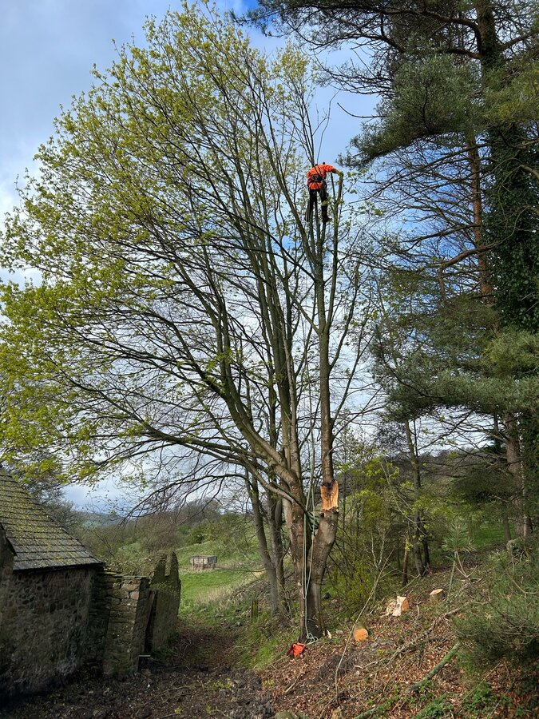

Tree felling, removal and stump grinding. Fixed price before we start. Site left clean, every time.
NPTC qualified · £10M insured · Free inspection
Garden tree removal, commercial tree services and complete tree and stump removal. All work by qualified tree surgeons. Fixed price before we start.
From £250
Sectional dismantling or straight fell. Dead, dangerous and storm-damaged trees. Everything taken away or logged for firewood.
Free Inspection
Removal planned around lawns, fences, sheds and neighbouring gardens. Access checked before the fixed quote.
Fixed Quote
Straight felling where space allows or controlled cutting in sections when buildings, roads or boundaries are close.
Complete Clearance
The tree comes down, the timber and brash go, then the stump is ground below the surface. One team, one quote.
Site Quote
Tree felling and removal for business parks, managed estates, schools and commercial sites. Work planned around staff, visitors, vehicles and operating hours.
24/7
Storm-damaged, fallen or immediately dangerous trees made safe and removed. We answer the phone and usually attend within hours.
"The team took down a 40ft ash leaning toward the house. Done in a day, site spotless. Wouldn't know a tree had been there."Michael, Durham
"Had 6 massive conifers along the boundary. Quoted mid-range, turned up when they said, cleared the lot in two days. Proper tidy job."Sarah, Darlington
"Emergency callout after the storm brought a tree down across the drive. They were here within two hours. Absolute lifesavers."Dave, Consett
"Stump grinding job. Big old beech stump that'd been there for years. Gone in under an hour. Soil leveled. Can't even tell."Janet, Bishop Auckland
"Crown reduction on a protected oak. Knew the TPO process inside out. Council approved, work done to spec. Tree looks better than ever."Graham, Chester-le-Street
"Three trees removed, one pruned, stumps ground. Quoted on Tuesday, started Thursday. No messing about. Would use again."Lisa, Spennymoor
"Neighbour's tree was overhanging our garden. They sorted it properly, talked to the neighbour, did the work, no drama."Tom, Sedgefield
"Phoned 5 tree surgeons. Only one who actually turned up to quote. Price was fair, work was excellent. The others never even called back."Karen, Durham
"The team took down a 40ft ash leaning toward the house. Done in a day, site spotless. Wouldn't know a tree had been there."Michael, Durham
"Had 6 massive conifers along the boundary. Quoted mid-range, turned up when they said, cleared the lot in two days. Proper tidy job."Sarah, Darlington
"Emergency callout after the storm brought a tree down across the drive. They were here within two hours. Absolute lifesavers."Dave, Consett
"Stump grinding job. Big old beech stump that'd been there for years. Gone in under an hour. Soil leveled. Can't even tell."Janet, Bishop Auckland
Guide prices. Size, access and complexity change the number. You get a fixed written quote after the free inspection, no estimates that drift.
£150 – £350
Up to 25ft. Hawthorn, small birch, young conifers. Usually 1–2 hours.
£350 – £800
25–45ft. Most garden trees. Sectional dismantling with rigging.
£800 – £2,500+
45ft+. Mature oaks, beech, large conifers. Full rigging, confined access.
Price depends on: proximity to buildings, power lines, access. Whether you keep the wood. Whether the stump comes out.
Every quote is free and no-obligation.
Three steps. No fuss.
Tell us about the tree and what needs doing. We'll arrange the free inspection.
We inspect the tree, access and any TPOs, then give you a fixed written price covering the work, waste and timing.
Tree down. Site swept. Timber logged or chipped. You carry on.




Tree felling, also called tree removal, is the process of cutting down a tree and bringing it to the ground. It is different from general tree surgery, which covers tree pruning, crown reduction, crown thinning, deadwooding, hedgerow maintenance and tree health work. Felling is usually done because a tree is dead, diseased, dangerous, or in the way of building work. Sometimes healthy trees need to come down too, if they are outgrowing a space, blocking light, or causing subsidence. We also carry out regular tree pruning, formative pruning for young trees, maintenance pruning for established ones, and safety pruning to remove dead or hazardous branches before they become a problem.
There are two main methods. Straight felling is used when there is enough open ground for the tree to fall in one piece. The tree surgeon cuts a directional notch at the base of the trunk, sometimes called a face cut or gob cut, then makes a back cut on the opposite side. The hinge wood between the two cuts guides the tree as it falls. A felling lever or wedges help if the tree needs encouragement. Sectional felling, also called sectional dismantling, is used in tight spaces, near buildings, or when there is no clear drop zone. The climber works from the top down, cutting branches and trunk sections and lowering them on ropes. This takes longer than straight felling but is safer when space is limited. Both methods need proper training. All our arborists hold NPTC qualifications and work to BS3998, the British Standard for tree work.
Before any tree comes down, we check the legal situation. If the tree has a Tree Preservation Order (TPO) or sits in a conservation area, you need permission from the local council. For larger-scale felling, typically more than 5 cubic metres of timber per calendar quarter, you may also need a felling licence from the Forestry Commission. Felling protected trees without permission can mean a fine. We check all of this during the free inspection. If permission is needed, we tell you what to apply for and how long it takes. Usually 6 to 8 weeks for a TPO application, though it varies by council.
After the tree is down, we deal with everything. Branches go through a wood chipper on site. The timber gets cut into manageable lengths. You can keep the logs for firewood, plenty of people do, especially with hardwood like oak or ash, or we take everything away. The wood chip makes good garden mulch if you want to keep it. If the stump needs to come out too, we use an industrial stump grinder that takes it below ground level so you can turf, pave or plant over it. The site is swept clean before we leave.
What you pay depends on the tree. Height, girth, how close it is to buildings or power lines, and whether the stump comes out all change the number. Access is the big one, if we can get vehicles and kit close to the tree, it is faster and cheaper. If everything has to be carried through a house or up a narrow alley, it takes longer. We quote a fixed price for the whole job, not a day rate or hourly rate. You know the number before we start. No estimates that drift, no extras added at the end. Call 07503 512953 and we will come and look, free, no obligation, usually same day or next.
We work across County Durham and the North East, from Durham city and Darlington up through Consett and the Durham Dales, across to Richmond and North Yorkshire. After Storm Arwen and more recent winter storms, we have dealt with emergency callouts for fallen trees and dangerous limbs across the region, including large-scale clearances where multiple trees came down across roads and properties. Further afield, we have carried out work as far south as Portsmouth and regularly cover Newcastle, Sunderland, Middlesbrough, Leeds, York, Harrogate, Manchester, Sheffield, Birmingham and London. Distance is rarely the issue, access and what the job needs are what matter.
In County Durham, ash dieback has become a growing problem. We have felled dozens of infected ash trees across the region, they become brittle, unpredictable, and dangerous to climb. We are also seeing more TPO applications go through Durham County Council as homeowners realise their trees are protected. If you are not sure whether your tree is covered, the free inspection covers that. We check the council's TPO register and the conservation area boundaries before anybody picks up a saw.
Based in County Durham. Working across Britain.
Call or send the details below. No pressure. No obligation.
Speak to our friendly North East England based team.
Same-day visits usually available. Don't let it sit.
📞 07503 512953